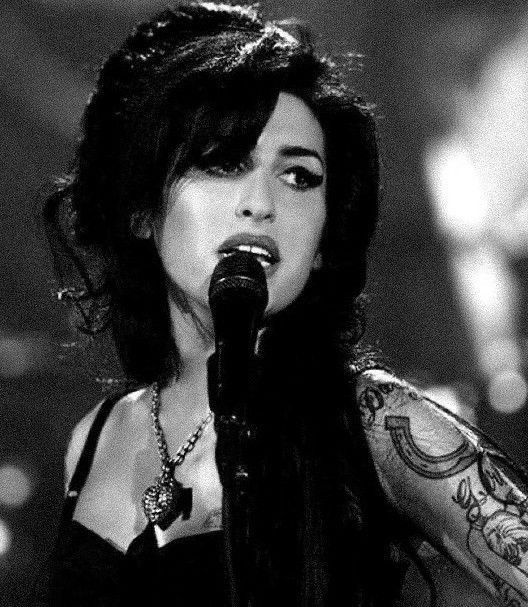
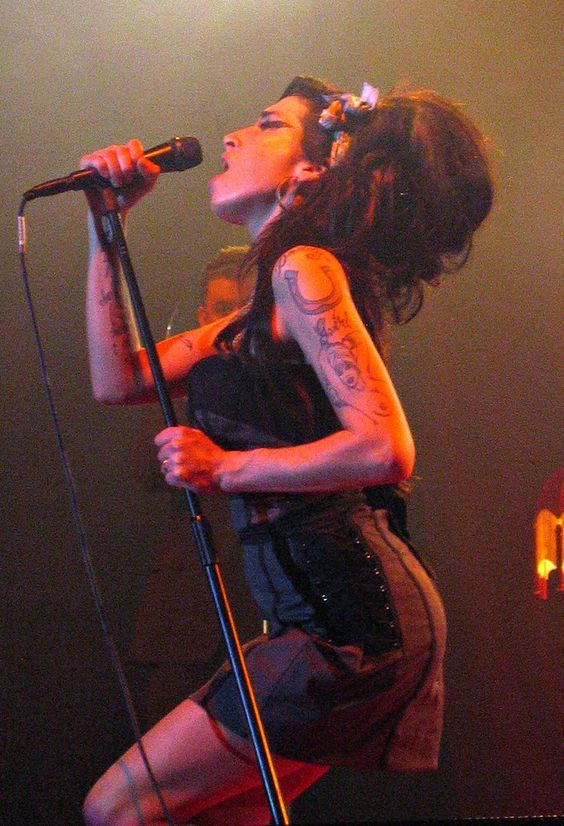
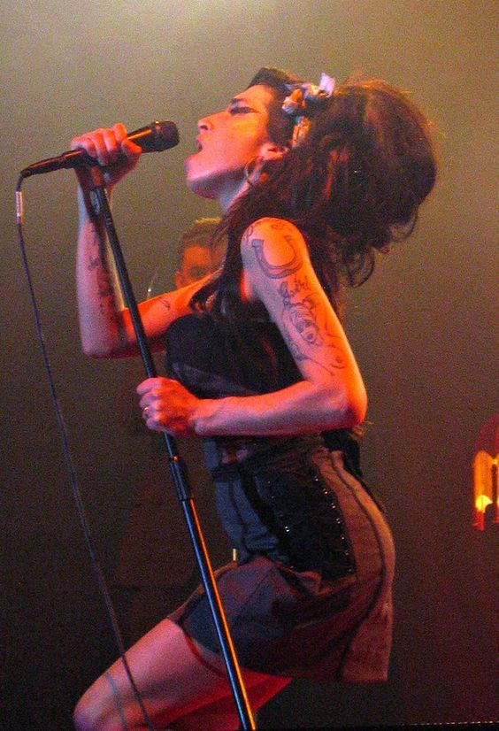
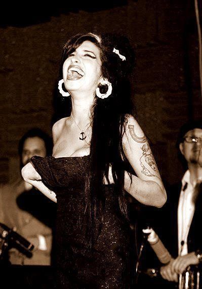
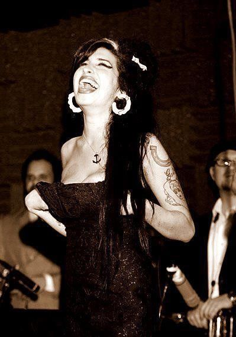

SOBRE SU NIÑES:
Amy Jade Winehouse nació el 14 de septiembre de 1983, en el seno de una familia judía y con tradición musical en el jazz. Se crio en los suburbios de Southgate (norte de Londres), junto a su padre Mitchell (conductor de taxi), su madre Janis (farmacéutica) y su hermano mayor Alex. Mitchell le cantaba constantemente éxitos de Frank Sinatra a la joven Winehouse, que pronto empezó a imitar el hábito de su padre hasta tal punto que sus maestros no podían mantenerla callada en clase. Sus padres se divorciaron cuando ella tenía nueve años. En ese tiempo, se inscribió en la Escuela de Teatro de Susi Earnsh, donde estuvo cuatro años. A los diez años, fundó una banda de rap llamada Sweet 'n' Sour. Luego, a los trece, acudió a la Sylvia Young Theatre School, pero fue expulsada tres años más tarde por «no ser aplicada» y hacerse un piercing en la nariz. En 1997 apareció en un episodio de The Fast Show, junto con otros estudiantes de la escuela de Sylvia Young. Más tarde asistió al BRIT School en Croydon y también a Ashmole School.
-


 

 

.jpg)
.jpg)
PRIMER EXITO INTERNACIONAL: "BACK TO BLACK"
El 30 de octubre de 2006, Winehouse publicó su segundo álbum, Back to Black, que tuvo buena recepción tanto comercial como crítica, y alcanzó el número uno en el Reino Unido. Gracias a este álbum ganó un Brit Award en la categoría de Mejor Artista Británica. En junio de 2007, fue nuevamente nominada a los Mercury Prize por Back to Black, en la categoría de Álbum del año,20 y su venta alcanzó el disco de platino en Estados Unidos. Como broche de oro, consiguió tres nominaciones a los MTV Video Music Awards de 2007.
.jpg)